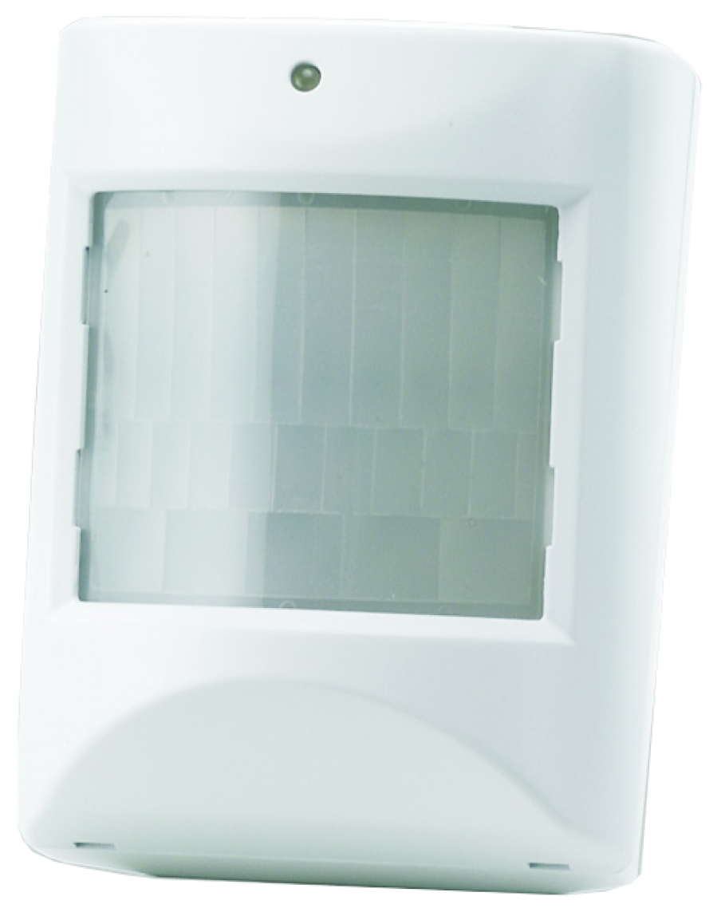
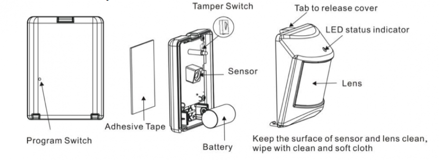
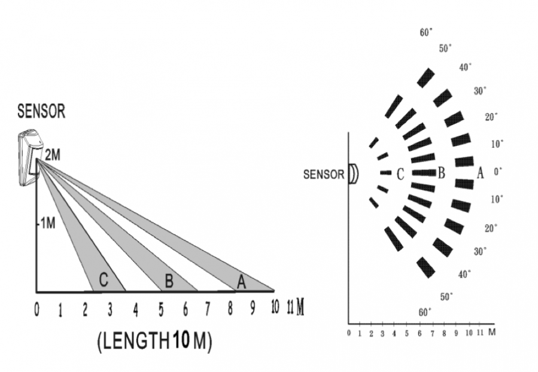

VIS_ZP3102
Firmware Version : 4.84 |
 |
Quick StartA This device is a wireless Z-Wave actor. A single click on the programming switch on the back side of the enclosure (behind little hole) will confirm Inclusion and Exclusion. Opening the enclosure will wake up the device and keep it awake. Please refer to the chapters below for detailed information about all aspects of the products usage. |
Product description
This motion detector (PIR = passive infrared receiver) detects the presence of a person in a room. The units send information to a controller or any other associated Z-Wave device. The device is protected by a tamper switch that will issue an alarm when the enclosure if opened. Beside the Motion detection the device also reports the ambient temperature.
Installation Guidelines
1. Release the cover tap to open the cover.
2. Ensure that the system is properly powered. Insert the CR123A battery into the batter compartment and the LED will start flashing slowly. This means that the device is not yet included into a Z-Wave network.

3. Using the adhesive tape to mount the device about 2 m above surface. To enhance operation place the device on a position which can detect the room widely. See figure below. The solid areas are the areas monitored. 
Behavior within the Z-Wave network
I On factory default the device does not belong to any Z-Wave network. The device needs to join an existing wireless network to communicate with the devices of this network. This process is called Inclusion. Devices can also leave a network. This process is called Exclusion. Both processes are initiated by the primary controller of the Z-Wave network. This controller will be turned into exclusion respective inclusion mode. Please refer to your primary controllers manual on how to turn your controller into inclusion or exclusion mode. Only if the primary controller is in inclusion or exclusion mode, this device can join or leave the network. Leaving the network - i.e. being excluded - sets the device back to factory default.
If the device already belongs to a network, follow the exclusion process before including it in your network. Otherwise inclusion of this device will fail. If the controller being included was a primary controller, it has to be reset first.
A single click on the programming switch on the back side of the device will confirm Inclusion and Exclusion.
Operating the device
The Motion detector will send a wireless signal every time a motion is detected. Please be aware that the device will need some time to adjust after turning on. After power on and inclusion please waitfor 5 minute before expecting correct operation.
Wakeup Intervals - how to communicate with the device?
W This device is battery operated and turned into deep sleep state most of the time to save battery life time. Communication with the device is limited. In order to communicate with the device, a static controller C is needed in the network. This controller will maintain a mailbox for the battery operated devices and store commands that can not be received during deep sleep state. Without such a controller, communication may become impossible and/or the battery life time is significantly decreased.
This device will wakeup regularly and announce the wakeup state by sending out a so called Wakeup Notification. The controller can then empty the mailbox. Therefore, the device needs to be configured with the desired wakeup interval and the node ID of the controller. If the device was included by a static controller this controller will usually perform all necessary configurations. The wakeup interval is a tradeoff between maximal battery life time and the desired responses of the device.
Opening the enclosure will wake up the device.
It is possible to set the node ID to 255 to send wakeup notifications as broadcast. In this mode device takes more time to go to sleep and drains battery faster, but can notify all it's direct neighbors about a wakeup.
Node Information Frame
NI The Node Information Frame is the business card of a Z-Wave device. It contains information about the device type and the technical capabilities. The inclusion and exclusion of the device is confirmed by sending out a Node Information Frame. Beside this it may be needed for certain network operations to send out a Node Information Frame.
A single click on the programming switch on the back side of the device will send out a Node Information Frame.
Associations
A Z-Wave devices control other Z-Wave devices. The relationship between one device controlling another device is called association. In order to control a different device, the controlling device needs to maintain a list of devices that will receive controlling commands. These lists are called association groups and they are always related to certain events (e.g. button pressed, sensor triggers, ...). In case the event happens all devices stored in the respective association group will receive a common wireless command.
Association Groups:
| 1 | Control Device when Motion is detected (max. nodes in group: 5) |
Configuration Parameters
Z-Wave products are supposed to work out of the box after inclusion, however certain configuration can adapt the function better to user needs or unlock further enhanced features.
IMPORTANT: Controllers may only allow to configure signed values. In order to set values in the range 128 … 255 the value sent in the application shall be the desired value minus 256. For example: to set a parameter to 200 it may be needed to set a value of 200 minus 256 = minus 56. In case of two byte value the same logic applies: Values greater than 32768 may needed to be given as negative values too.
| Value | Description |
|---|---|
| 129 — 127 | Seconds |
Technical Data
| Battery Type | 1 * CR123A |
| Explorer Frame Support | Yes |
| SDK | 4.54 |
| Device Type | Slave with routing capabilities |
| Generic Device Class | Binary Sensor |
| Specific Device Class | Routing Binary Sensor |
| Routing | No |
| FLiRS | No |
| Firmware Version | 4.84 |